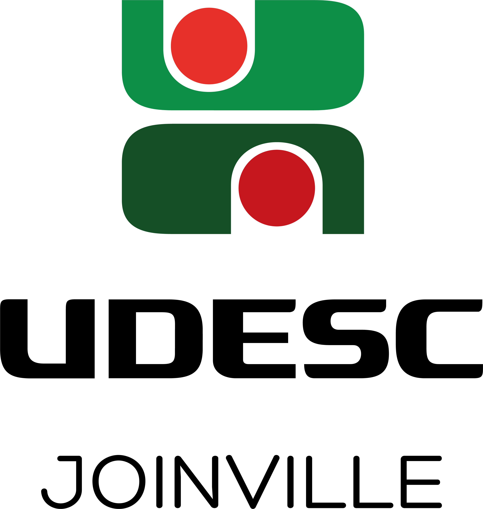
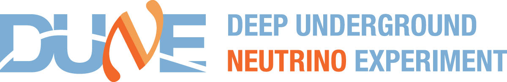

Colour-dipole neutrino cross sections from 103 to 1014 GeV, and what happens to them along null geodesics in Schwarzschild.
23 slides prepared for the DUNE collaboration meeting at Unicamp, 2026. Two live dashboards: the cross sections with a hover readout, and a Schwarzschild photon orbit integrated in the browser.
PDF · 10 pagesWhere each of the 30 physical equations lives — file and line — and the fourteen open problems, ordered by what blocks the production sweep.
PDF · 5 pagesHow to build and run everything, and what test each command lets you perform. Every command was executed before it entered the document.
Every uncaptured ray in Schwarzschild has a turning point at
r_t ≥ 1.5 r_s, where f = 1/3. So the blueshift is capped at
√3, and with σ ~ E^α the cross-section ratio is capped at
3^(α/2) — exactly. Saturation flattens α at high energy, so the
ceiling falls with energy. That derivative is the signature: a PDF refit shifts the
normalisation, it does not produce the tilt.
The transport code needs only g++ and the STL. The dipole code has
its own build; the two are coupled by file — a cross-section table with declared
conventions — and never by link. Full instructions in the command reference above.